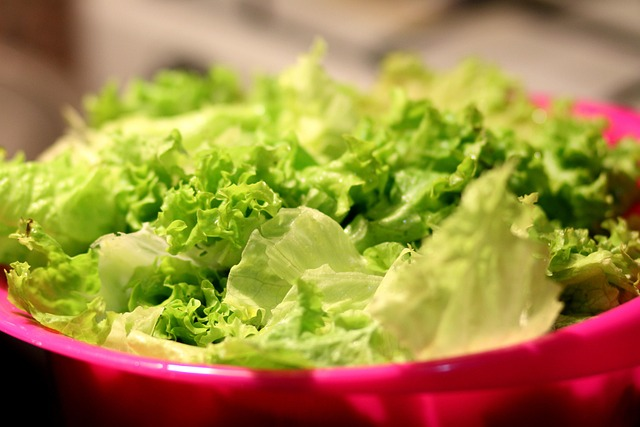
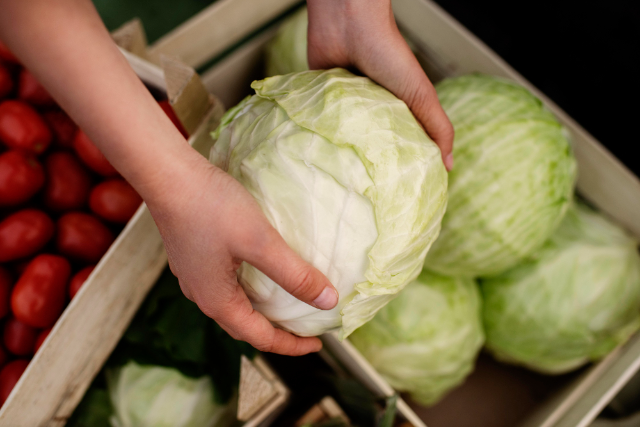
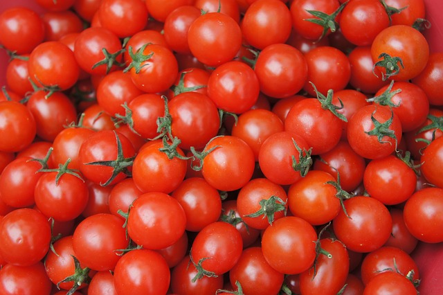

Produtos frescos e de qualidade para a sua mesa.

Alface
Fresca, crocante e cheia de sabor, a alface é perfeita para saladas leves e nutritivas. Rica em fibras e vitaminas, é a escolha ideal para quem busca saúde e bem-estar no dia a dia.

Repolho
O repolho é versátil e saboroso, podendo ser usado cru em saladas ou cozido em diversas receitas. Além de ser econômico, é fonte de vitaminas e minerais essenciais para uma alimentação equilibrada.

Tomate Cereja
Pequeno no tamanho, mas grande no sabor! O tomate cereja é doce, suculento e ótimo para saladas, petiscos ou até para decorar pratos. Uma explosão de frescor e cor em cada mordida.